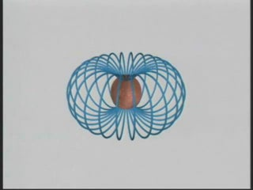
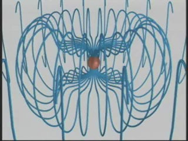
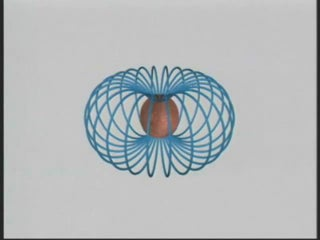
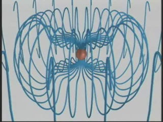

SUBJECT: Dipole Radiation
DESCRIPTION: These animations illustrate electric dipole radiation from a point electric dipole. The dipole moment vector is always vertical, and its magnitude varies sinusoidally with an amplitude of 10%. In the first animation, we show the fields in the quasi-static zone, the induction zone, and the radiation zone. The motions of the field lines are in the direction of the local Poynting flux vector.
In the second animation, we show selected fieldlines in the quasi-statice zone near the dipole itself.
In the third animation, we show a 3D fieldline representation of the entire phenomenon.
VISUALIZATIONS: 2D (MPG - 4 MB); 3D near (WMV - 4.9 MB); 3D far (WMV - 6.8 MB)